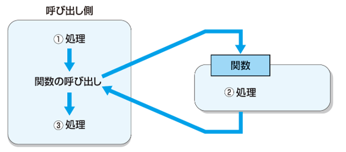
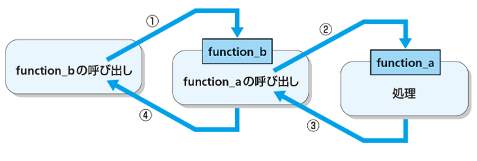
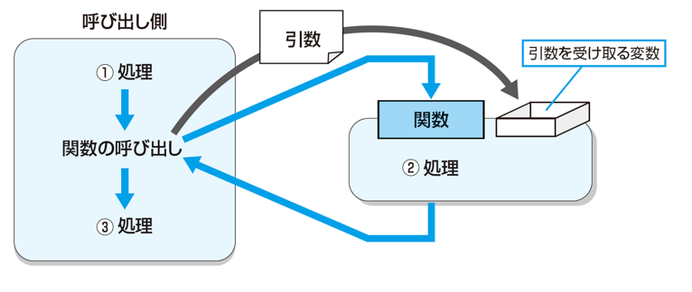
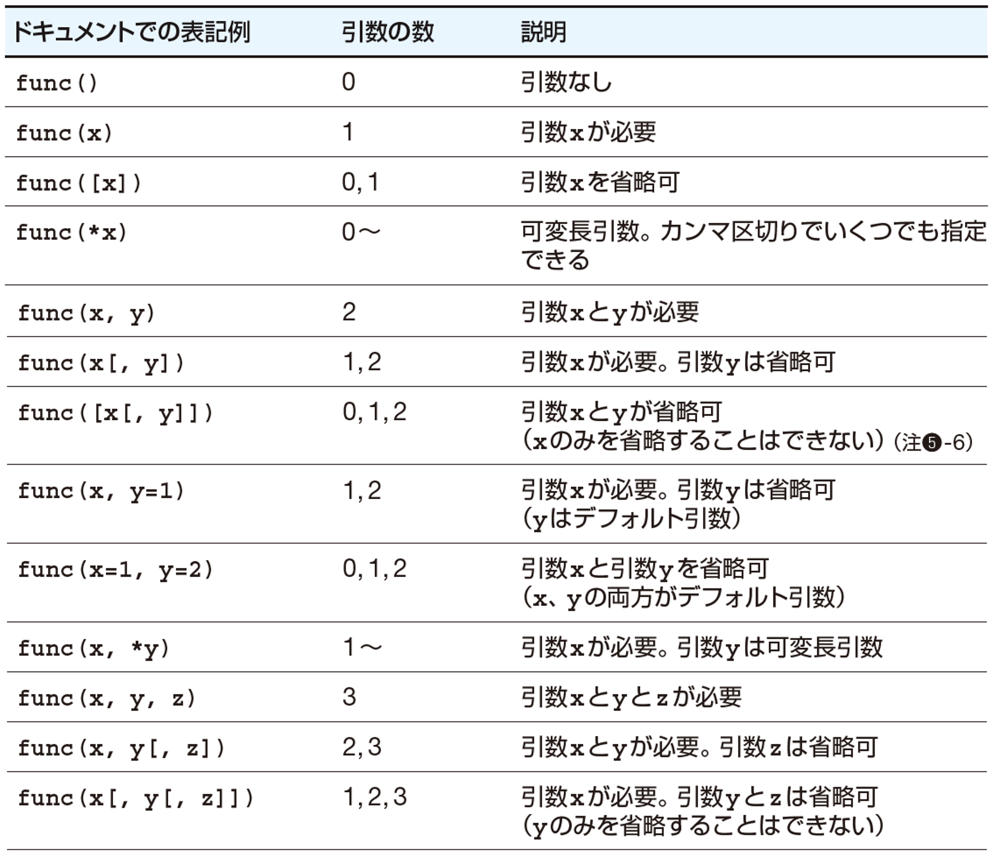
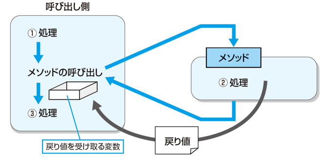

6. 第5章 ユーザ定義関数¶
6.1. 関数¶
6.2. 関数とは¶
複数の命令文を1つにまとめて名前を付けたもの
何度も使う命令文の集まりを管理したり、プログラムコードの見通しをよくするのに便利な仕組み
組み込み関数：はじめから準備されている関数
例： print関数、 id関数、len関数、del関数ユーザー定義関数：自分で新しく定義する関数
構文：関数の定義
def 関数名():
処理内容
6.3. ユーザー定義関数¶
sya_hello関数の定義
def sya_hello():
print('こんにちは')
print('今日は良い天気ですね')
say_hello 関数の呼び出し
sya_hello()
実行結果
こんにちは
今日は良い天気ですね
6.4. 関数呼び出しの処理の流れ¶

def function_a(): <---- function_aの定義
print('function_aの処理です')
def function_b(): <---- function_bの定義
print('function_bの処理です')
function_a() <---- function_aの呼び出し
function_b() <---- function_bの呼び出し
function_aの処理です
function_bの処理です
6.5. 関数の定義位置¶
関数の定義は、関数の呼び出しの前に行われている必要がある
def function_a():
print('function_aの処理です')
function_a()
function_b() <---- この時点でfunction_bが定義されてなのでエラーになる
def function_b():
print('function_bの処理です')
6.6. 関数の呼び出しの階層¶

def function_a():
print('function_aの処理です')
def function_b():
print('function_bの処理開始')
function_a()
print('function_bの処理終了')
print('function_b()を呼び出します')
function_b()
実行結果
function_b()を呼び出します
function_bの処理開始
function_aの処理です
function_bの処理終了
6.7. 変数のスコープ¶
変数には参照できる範囲（スコープ）がある
ローカル変数：関数の中でのみ使用できる
def function_a():
a = 10 <---- 関数に中でのみ参照できる
print(a)
print(a) <---- エラーになる
グローバル変数：プログラムコード全体で使用できる
a = 10 <---- プログラムコード全体で参照できる
def function_a():
print(a)
6.8. 変数のスコープ¶
関数の中でグローバル変数の値を変更したい場合は global キーワードを使用する
global宣言がある場合
a = 10
def function_a():
global a
a = 5 <---- グルーバル変数
function_a()
print(a)
実行結果
5
global宣言がない場合
a = 10
def function_a():
a = 5 <---- ローカル変数
function_a()
print(a)
実行結果
10
6.9. 関数の引数¶
6.10. 引数¶
関数を呼び出すときに、関数に対して値を渡すことができる。
渡される値を引数という。

6.11. 引数のある関数¶
def countdown(start): <---- 関数の後ろのカッコ()の中の変数で値を受け取る
print('関数を受け取った値:', start)
print('カウントダウンをします')
count = start <---- 受け取った値を使用する
while counter >= 0:
print(counter)
counter -= 1
countdown(3) <---- 値3を引数にして関数を呼び出す
countdown(10) <---- 値10を引数にして関数を呼び出す
実行結果
関数を受け取った値: 3
カウントダウンをします
3
2
1
0
関数を受け取った値: 10
カウントダウンをします
10
9
: (中略)
1
0
6.12. 引数が2つある関数¶
def countdown(start, end): <---- 引数をカンマ区切りで並べる(引数列とよぶ)
print('1つ目の引数で受け取った値:', start)
print('2つ目の引数で受け取った値:', end)
print('カウントダウンをします')
count = start
while counter >= end:
print(counter)
counter -= 1
countdown(7, 3) <---- 2つの値を引数にして関数を呼び出す
変数名を指定した呼び出し(キーワード引数)
countdown(start=7, end=3)
countdown(end=3, start=7)
6.13. デフォルト引数¶
関数の定義
def countdown(start, end=0):
処理内容
※ デフォルト値のある引数は、そうでない引数よりも引数列の後方に書く必要がある。
引数列に「変数名=デフォルト値」を記述しておくと、
関数を呼び出すときに、引数を省略できる
関数の呼び出し例（2番目の引数を省略できる）
countdown(10)
関数の呼び出し例（2つの引数を指定することもできる）
countdown(10, 0)
6.14. 可変長引数¶
可変長引数：引数の数に制限がない
タプルで複数の値を受け取る
def countdown(*変数名):
処理内容
def func_a(*args):
for a in args:
print(a)
func_a(1, 2)
func_a(1, 2, 3, 4)
辞書で複数のキーと値のペアを受け取る
def countdown(**変数名):
処理内容
def func_a(**kwargs):
for k, v in kwargs:
print(k, v)
func_a(a=1, b=2)
func_a(c=3, d=4, e=5, f=3)
6.15. ドキュメントでの関数の書式¶
※ Python標準ライブラリのドキュメントで使用されている表記

[ ] 内の引数は省略できる
6.16. 関数の戻り値¶
6.17. 戻り値¶
関数で処理した結果の値を、呼び出し元に戻すことができる。
戻される値のことを「戻り値」という。

6.18. 戻り値のある関数¶
値を戻すには、関数の中に
return 値
と記述する
def circle_area(r):
return r * r * 3.14
a = circle_area(2.5)
print('半径2.5の円の面積は', a)
6.19. 真偽値を戻り値とする関数¶
def is_positive(i):
if i > 0:
return True
else:
return False
a = -10
if is_positive(a) == True:
print('aの値は正です')
else:
print('aの値は負またはゼロです')
まとめて記述する
def is_positive(i):
return i > 0 <---- 比較結果は真偽値
a = -10
if is_positive(a): <---- 真偽値で比較
print('aの値は正です')
else:
print('aの値は負またはゼロです')
6.20. 複数の値を戻す¶
複数の値を戻したい場合は、タプルを使用する
def get_two_numbers():
return (2, 3)
a, b = get_two_numbers()
print(a, b)
6.21. 高階関数とラムダ式¶
6.22. 高階関数（こうかい・かんすう）¶
関数もオブジェクト
高階関数とは、関数を引数で受け取る関数
def print_price(price, func): <---- 関数funcを受け取る
print('価格は' + func(price)) <---- 受け取った関数を使う
def print_without_tax(price):
return f'税抜き{price}円'
def print_with_tax(price):
return f'税込み{int(price*1.1)}円'
print_price(800, print_without_tax) <---- 関数を引数にしている
print_price(800, print_with_tax) <---- 関数を引数にしている
6.23. ラムダ式（lambda式）¶
関数の表記をシンプルにしたもの
構文
lambda式 引数列: 戻り値
関数
def print_without_tax(price):
return f'税抜き{price}円'
ラムダ式
lambda price: f'税抜き{price}円'
例）関数
def print_price(price, func):
print('価格は' + func(price))
def print_without_tax(price):
return f'税抜き{price}円'
def print_with_tax(price):
return f'税込み{int(price*1.1)}円'
print_price(800, print_without_tax)
print_price(800, print_with_tax)
例）ラムダ式
def print_price(price, func):
print('価格は' + func(price))
print_price(800, lambda price: f'税抜き{price}円')
print_price(800, lambda price: f'税込み{int(price*1.1)}円')
6.24. 練習問題¶
6.25. 問題 1¶
次の文章の空欄に入れるべき語句を、選択肢から選んでください。
* 関数を呼び出すときに関数に渡す値のことを[（1）]といい、関数から戻される値のことを[（2）]という。
* 関数に複数の値を渡すために、[（1）]をカンマ区切りで並べたものを[（3）]と呼ぶ。
* [（1）]のうち、変数の名前を指定したものを[（4）] 、値が渡されなかった場合に設定されるデフォルト値が決まっているものを[（5）]、個数が決まっていないものを[（6）]という。
【選択肢】
・戻り値 ・可変長引数 ・引数 ・キーワード引数
・デフォルト引数 ・引数列
6.26. 問題 1（解答）¶
次の文章の空欄に入れるべき語句を、選択肢から選んでください。
* 関数を呼び出すときに関数に渡す値のことを[ 引数 ]といい、関数から戻される値のことを[ 戻り値 ]という。
* 関数に複数の値を渡すために、[ 引数 ]をカンマ区切りで並べたものを[ 引数列 ]と呼ぶ。
* [ 引数 ]のうち、変数の名前を指定したものを[ キーワード引数 ] 、値が渡されなかった場合に設定されるデフォルト値が決まっているものを[ デフォルト引数 ]、個数が決まっていないものを[ 可変長引数 ]という。
【選択肢】
・戻り値 ・可変長引数 ・引数 ・キーワード引数
・デフォルト引数 ・引数列
6.27. 問題 2¶
次のようなfunc関数が定義されています。
def func(a, b=5):
print(a, b)
次のうち、func関数を正しく呼び出せるものを選んでください。
（1） func()
（2） func(5)
（3） func(5, 10)
（4） func(a = 5)
（5） func(b = 10)
（6） func(5, b = 10)
（7） func(b = 10, a = 5)
6.28. 問題 2 （解答）¶
次のようなfunc関数が定義されています。
def func(a, b=5):
print(a, b)
次のうち、func関数を正しく呼び出せるものを選んでください。
× （1） func()
〇（2） func(5)
〇（3） func(5, 10)
〇（4） func(a = 5)
× （5） func(b = 10)
〇（6） func(5, b = 10)
〇（7） func(b = 10, a = 5)
6.29. 問題 3¶
各問いの条件に合う関数を作成してください。プログラムコードには、その関数を呼び出す命令文を含めてください。関数に戻り値がある場合は、受け取った戻り値を出力するようにしてください。引数の値は自由に決めてかまいません。
例題
関数名： get_triangle_area
引数列： base, height
処理の内容: 底辺の長さbase, 高さがheightで表される
三角形の面積を返す
解答例
def get_triangle_area(base, height):
return base * height / 2
print(get_triangle_area(10.0, 3.0))
6.30. 問題 3-1¶
関数名： print_hello
引数列： count
処理の内容: 引数で渡されたcountの回数だけ、Helloという文字列を出力する。
※ 引数の値が3の場合はHelloという文字列を3回出力するようにする。
6.31. 問題 3-1（解答）¶
関数名： print_hello
引数列： count
処理の内容: 引数で渡されたcountの回数だけ、Helloという文字列を出力する。
※ 引数の値が3の場合はHelloという文字列を3回出力するようにする。
解答
def print_hello(count):
for i in range(0, count):
print('Hello')
print_hello(3)
6.32. 問題 3-2¶
関数名： get_rectangle_area
引数列： width, height
処理の内容: 引数で渡された幅(width)と高さ(height)の値を持つ長方形の面積を返す
6.33. 問題 3-2 （解答）¶
関数名： get_rectangle_area
引数列： width, height
処理の内容: 引数で渡された幅(width)と高さ(height)の値を持つ長方形の面積を返す
解答
def get_rectangle_area(width, height):
return width * height
print(get_rectangle_area(10, 5))
6.34. 問題 3-3¶
関数名： get_message
引数列： name
処理の内容: 'こんにちは○○さん'という文字列を返す。○○には引数で渡されたnameの値を入れる。引数が指定されなかった場合は、'名無し'という文字列をnameのデフォルト値とする。
6.35. 問題 3-3 （解答）¶
関数名： get_message
引数列： name
処理の内容: 'こんにちは○○さん'という文字列を返す。○○には引数で渡されたnameの値を入れる。引数が指定されなかった場合は、'名無し'という文字列をnameのデフォルト値とする。
解答
def get_message(name='名無し'):
return f'こんにちは{name}さん'
print(get_message())
print(get_message('山田'))
6.36. 問題 3-4¶
関数名： get_absolute_value
引数列： value
処理の内容: 引数で渡されたvalueの値の絶対値を返す。
※ 5.2の絶対値は5.2、-3.3の絶対値は3.3。
6.37. 問題 3-4 （解答）¶
関数名： get_absolute_value
引数列： value
処理の内容: 引数で渡されたvalueの値の絶対値を返す。
※ 5.2の絶対値は5.2、-3.3の絶対値は3.3。
解答
def get_absolute_value(value):
if value < 0:
return -value
return value
print(get_absolute_value(5.2))
print(get_absolute_value(-3.3))
6.38. 問題 3-5¶
関数名： get_tail
引数列： *args
処理の内容: 可変長引数で渡された複数の引数の中で、末尾の引数の値を返す
※ get_tail(3, 5, 9, 2)とすると、値2が返されるようにする
6.39. 問題 3-5 （解答）¶
関数名： get_tail
引数列： *args
処理の内容: 可変長引数で渡された複数の引数の中で、末尾の引数の値を返す
※ get_tail(3, 5, 9, 2)とすると、値2が返されるようにする
解答
def get_tail(*args):
return args[-1]
print(get_tail(3, 5, 9, 2))